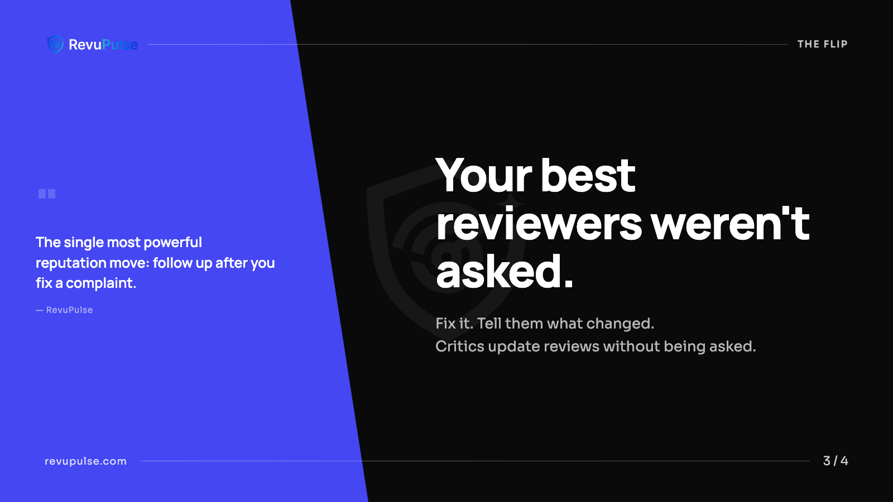
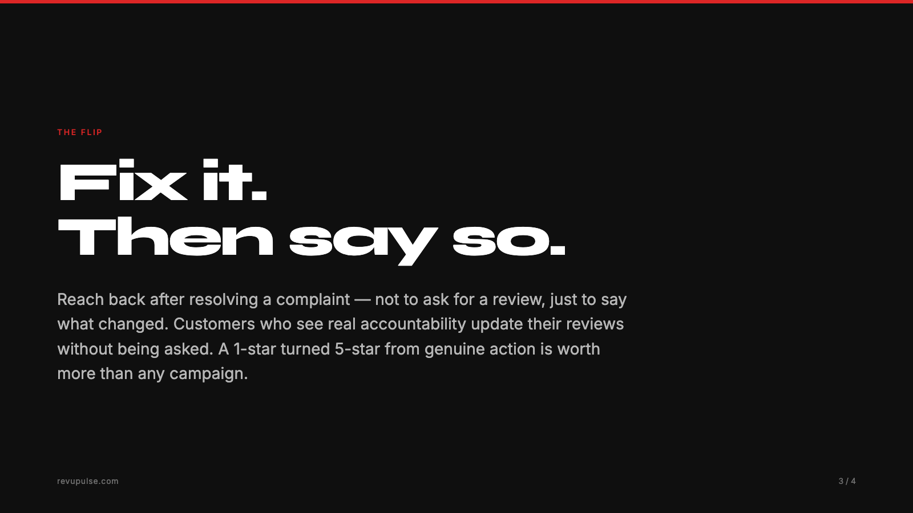
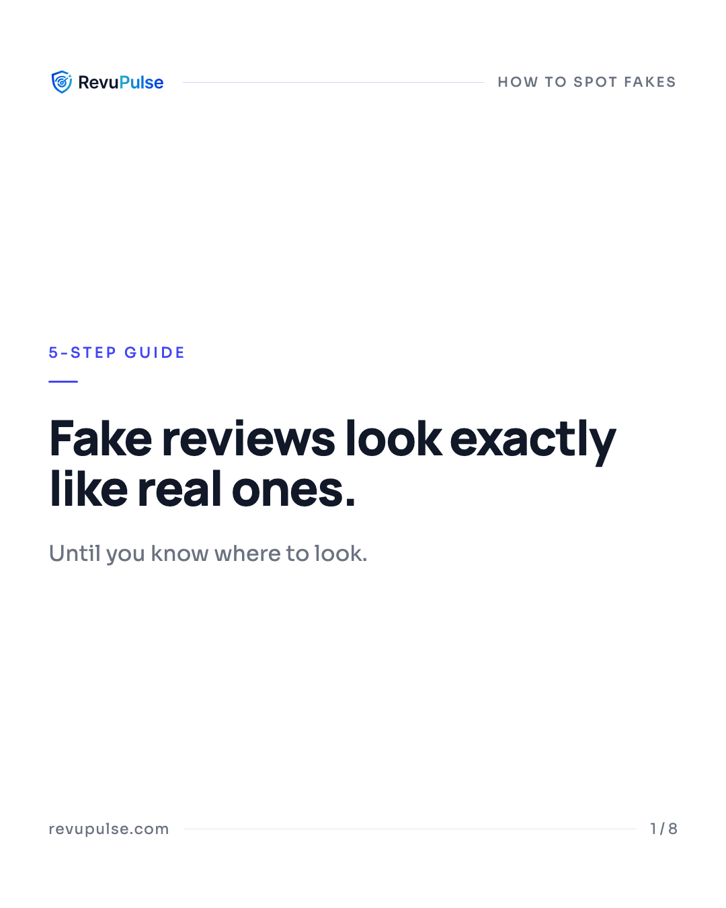
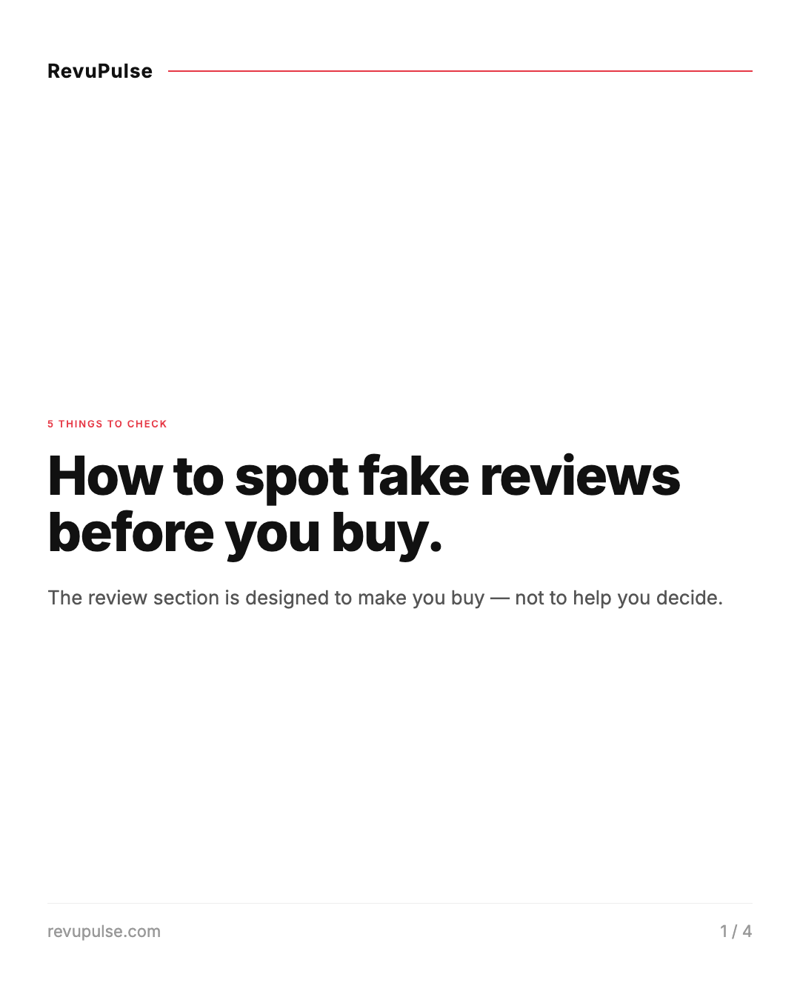
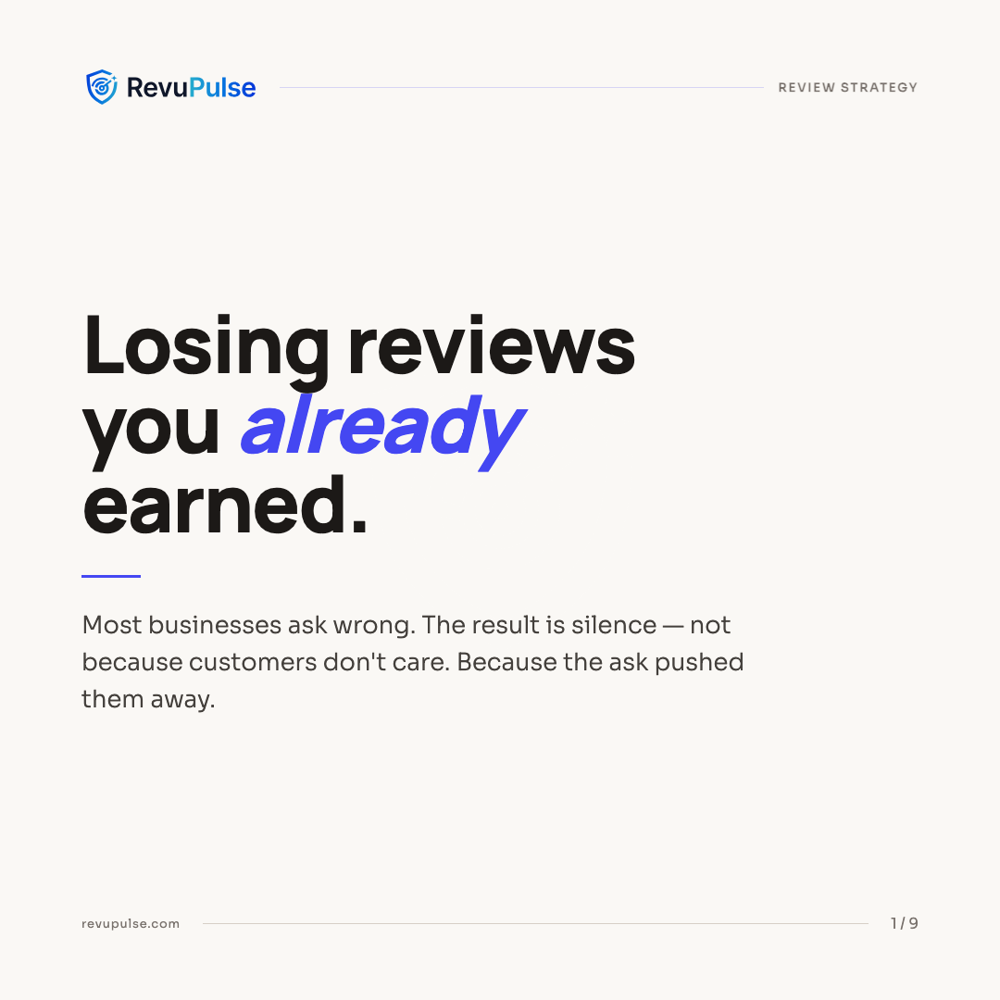
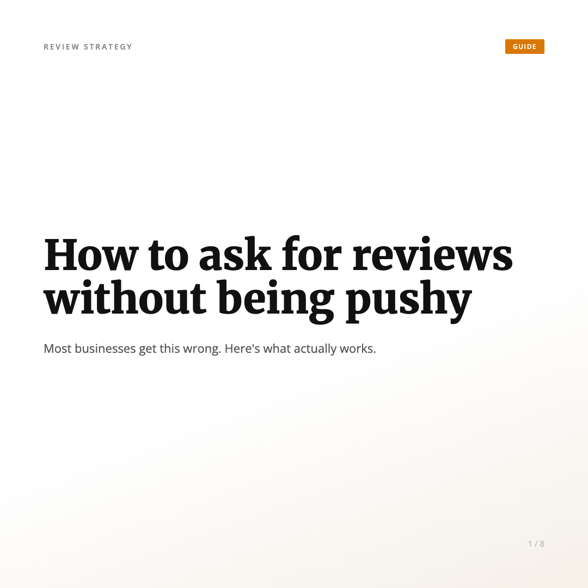
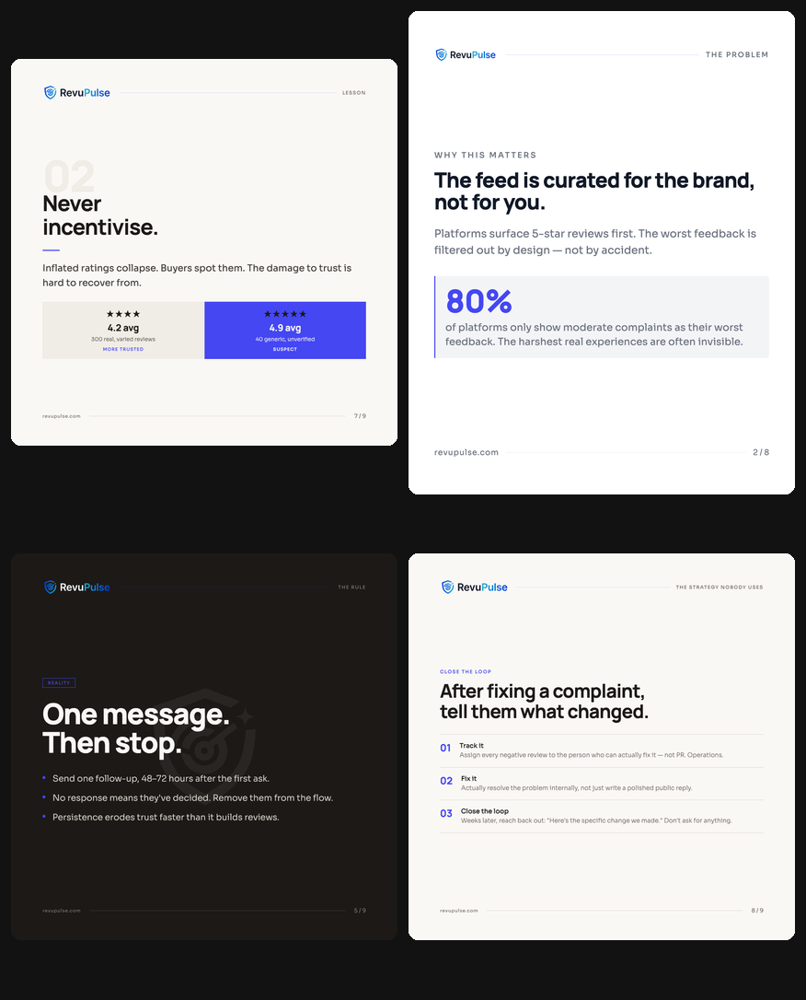
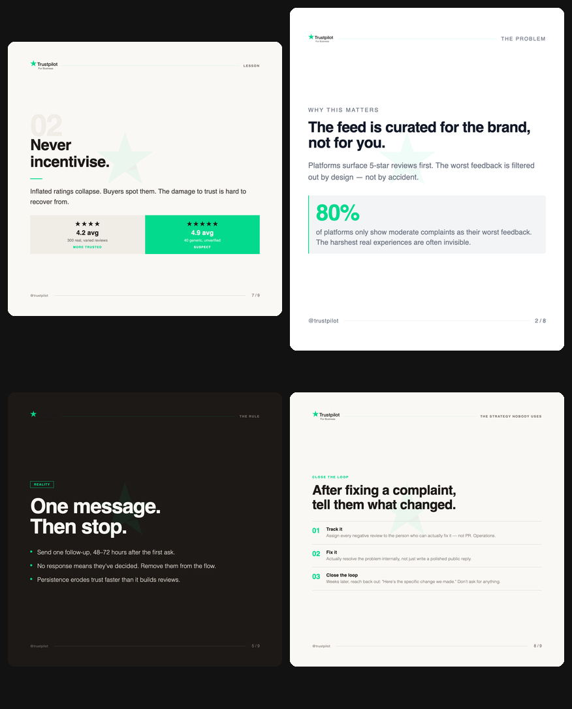

I did not set out to build a tool. I set out to post consistently on LinkedIn and Instagram without spending three hours per post in Figma. The carousel creator was the result of making that constraint explicit, then solving it properly. What I ended up with is a Claude Code skill that takes any blog post and produces platform-ready, fully branded carousel slides for LinkedIn, Instagram, Twitter/X, Pinterest, or Threads. It enforces character limits, caches content models, supports brand profiles with watermarks and logos, and lets you swap brands in-place without re-rendering anything.
A Claude skill with a structured pipeline and four approval gates produces carousels that pass platform character limits, maintain brand consistency, and trace every claim to its source. The eval comparison between running with and without the skill is where the difference becomes concrete and measurable. If you build repeatable content workflows, this approach scales further than any prompt ever will.
Key Takeaways
- A structured SKILL.md with a 6-stage pipeline produces categorically different output from ad-hoc prompting.
- Without a skill, a Twitter/X slide had 248 characters against an 80-character platform limit. With the skill, every slide passed.
-
Content extraction happens once per source. The cached
content-model.jsonis reused across platforms, saving tokens and preventing divergence. - Four approval gates surface problems before they multiply across 10 slides.
- Brand swapping works via in-place CSS token replacement. No pipeline re-run needed.
- Platform constraints are hard rules in the skill, not soft guidelines.
- The skill-creator plugin forces you to define failure modes before success criteria. That ordering matters.
- Evals against a baseline reveal failures you cannot spot by testing only the "with skill" path.
- Brand profiles decouple visual identity from content generation entirely.
- A small team with clear requirements can build and scale a full content workflow using Claude skills.
The Problem With Multi-Platform Carousels
Carousels are one of the highest-engagement formats on LinkedIn and Instagram. A well-constructed hook slide stops the scroll. But every platform has different rules: LinkedIn caps at 10 slides at 1080x1080px, Twitter/X allows 4 slides at 1600x900px with an 80-character body limit, Instagram portrait is 1080x1350px with a 30-character title limit. None of that is hard to know. It is hard to apply consistently across every piece of content you publish.
The manual workflow: write the blog, open Figma, pick a template, adapt the content to fit, export to PNG, write the post body separately, schedule. Repeat per platform. That works once. It does not scale when you also run a company and write every week.
The source of all my carousel content is my RevuPulse blog, which I build from real user interviews and client conversations. The quality is there. What was missing was a systematic way to turn that content into multi-platform visual assets without manual reformatting every time.
What the Skill-Creator Plugin Changed
Before using the skill-creator plugin, I had a working carousel prompt. It produced reasonable HTML slides. The problem was that "reasonable" was inconsistent: sometimes it picked a weak narrative, sometimes it ignored character limits, sometimes brand colors were wrong.
The skill-creator plugin forced a different framing. Instead of describing what I wanted the output to look like, it pushed me to define the pipeline: what are the stages, what does each produce, what are the failure modes, where does human review happen? It has a critical evaluation step where you run the same prompt with and without the skill and compare outputs. That step alone is worth doing even if you never ship the skill.
The skill-creator's problem-solution structure means you define what failure looks like before you define what success looks like. That ordering surfaces constraints you would otherwise discover after generating 10 bad slides.
The result was a SKILL.md with a 6-stage internal pipeline.
Each stage produces a distinct artifact. Each artifact is what the next stage depends on.
Nothing is merged or skipped.
The 6-Stage Pipeline
Most people think of carousel generation as: read the article, write some slides. The pipeline breaks that into six discrete problems, each with its own rules.
| Stage | What it does | Output |
|---|---|---|
| 1. Content Normalization | Strips noise (ads, navbars, subscribe prompts), preserves structure: headings, bullets, blockquotes, stats, frameworks. | Clean structured object |
| 2. Content Understanding | Extracts atomic knowledge units: insights scored 0.0-1.0, lessons, quotes, frameworks, examples. Every item traced to its source section. Nothing invented. | content-model.json |
| 3. Narrative Generation | Generates narrative options (5 Lessons, Problem/Solution, Myth vs Reality, etc.), each with 4 hook types: curiosity, contrarian, data, pain. | carousel-narratives.json |
| 4. Slide Planning | Converts chosen narrative into a story arc. Assigns a role to each slide (hook, context, lesson, example, CTA). Caps count at platform max. | Slide plan for approval |
| 5. Template Adaptation | Compresses content to hard platform character limits through three levels: minimal trim, moderate rewrite, aggressive compression. Never renders over limit. | Compliance table per slide |
| 6. Visual Rendering | Generates self-contained HTML files at exact platform pixel dimensions. All styles inlined. Design tokens as CSS custom properties. Consistent across the full set. |
01.html ... NN.html
|
Paired with the pipeline are four approval gates where the model pauses and waits for human confirmation: after content model review, after narrative and hook selection, after slide plan review, and after two pilot slides are rendered. Problems surface at the cheapest possible moment, before they propagate across 10 slides.
What the Eval Revealed
I ran three evals: LinkedIn editorial, Twitter/X contrarian, and Instagram portrait step-by-step. Each ran with and without the skill against the same source blog posts. The without-skill baselines were not bad outputs. They were specific, measurable failures.
Twitter/X (Eval 2)
| Slide | Without skill (chars / 80 limit) | With skill (chars / 80 limit) |
|---|---|---|
| Slide 01 | 111 chars ✗ | 70 chars ✓ |
| Slide 02 | 127 chars ✗ | 57 chars ✓ |
| Slide 03 | 248 chars ✗ (3x over) | 66 chars ✓ |
Slide 03 without the skill was 248 characters against an 80-character limit. Three times over. That slide would render as unreadably small type at 1600x900px. There was no character limit check at all in the without-skill run. The content was written at whatever length felt right.

Body: 66 chars. Pull-quote fills the accent zone. Within the 80-char limit.

Body: 248 chars — 3x over the 80-char limit. Would render as illegible small type.
Instagram portrait (Eval 3)
All three content slide titles exceeded the 30-character Instagram limit. The brand accent
color was #e63946 (red). The actual brand color is
#4447f2 (indigo). No logo, no watermark, generic Inter font
throughout. A brand reader would identify those slides as off-brand immediately.

Brand indigo (#4447f2), structured top-bar, correct portrait dimensions.

Wrong accent (#e63946 red), no logo, plain text brand name, title over 30-char limit.
LinkedIn editorial (Eval 1)
One narrative explored, no alternatives. Insights pulled without scoring. Slide 7 was a summary checklist, which is a low-value story beat the pipeline would have flagged. No formal gate to validate content accuracy before rendering.

Manrope/Sora fonts, brand tokens, watermark, hook driven by content model scoring.

Merriweather/Open Sans, amber accent, no logo, no watermark, title-derived hook.
You cannot spot failure modes by testing only the "with skill" path. The baseline reveals what the model does when left to its own judgment, and those decisions compound across every slide in the set.
The eval also surfaced something useful beyond just finding bugs: it produced a concrete run-log that I used to write guardrails directly into the skill. Every rule in the SKILL.md about character limits, brand token fidelity, and source traceability has a corresponding failure in one of those baseline runs.
Incremental Features: What Got Added and Why
The first working version produced clean HTML slides. But it was not brandable, and the model was picking brand tokens from inconsistent locations across the prompt. These were the additions, roughly in order:
Brand profile system. A JSON file at a known path with explicit fields for primary color, font pair, logo assets (SVG or PNG), watermark opacity and position. This decoupled visual identity from content generation. The model reads the profile at the start of every session and applies it consistently.
Content model caching. The first time the skill runs on a source document,
it writes a content-model.json. Every subsequent carousel
from that source loads the cached model and skips Stages 1-2 entirely. In Eval 2
(Twitter/X), the content model was loaded from the Eval 1 cache. No re-extraction, no token
waste, no risk of divergence between platform versions of the same content.
Approval gates. Without them, the skill would generate all 10 slides before you could course-correct on the narrative or content model accuracy. Four gates mean you review the content understanding before slides are planned, and you approve the slide plan before anything is rendered.
Visual style presets. Minimal, Bold, Editorial, Data-Forward, Dark Mode. Each has a defined font pairing, background, and surface color system. The brand's primary color overrides the accent token in any preset, so your brand identity always shows through regardless of style choice.
Brand Swapping Without Re-Rendering
After generating a carousel, I needed to apply a different brand profile to the same slides. The obvious path was to re-run the pipeline with the new profile. The problem: re-running regenerates the HTML, which means the model re-interprets layout, spacing, and copy. The output is similar but not identical, and it costs tokens every time.
The better path: since all design tokens were already CSS custom properties on
:root, in-place token replacement was sufficient. The
apply_brand.py script reads the brand profile JSON, swaps
the CSS variable values across all HTML files in the folder, injects the new logo and
watermark, and exits. Slide content, layout, and structure are untouched.
python3 apply_brand.py \
path-to-slides-folder \
path-to-brand-profile.json \
[--dark-slides 5,8]Same four slides, two brand identities — no pipeline re-run, no model calls:


The --dark-slides flag tells the script which slides have
dark backgrounds so it injects the correct logo variant (light logo on dark slides, dark
logo on light slides). The script is idempotent. Run it again with a different profile and
it swaps cleanly over whatever the previous run wrote.
Re-rendering slides to change a brand is like repainting a car by building a new one. When your design tokens are clean, swapping them is a script, not a pipeline.
This also makes multi-brand scaling straightforward. One set of slides, applied to three different brand profiles, produces three visually distinct carousel sets without any additional model calls. The content-model and narrative are reused across all of them.
What This Means for Small Teams
The carousel creator is not a product. It is a SKILL.md
file, two reference files, and one Python script. A solo builder or a two-person team can
run it from the terminal, get production-grade branded slides for any platform, and publish
consistently without a design team or a dedicated content role.
The pattern generalizes beyond carousels. The skill-creator plugin is not specific to visual content. The same structure, a clear pipeline, human approval gates, an eval baseline, and incremental features driven by observed failures, applies to any repeatable content or workflow task. I have separate skills for blog drafts and LinkedIn post copy. Each one feeds the next.
The role of a developer in this model is not to write code. It is to know what you want to build, define the failure modes clearly, and iterate based on observed output. The skill handles execution. The human handles judgment. A small team with clear requirements and the right tooling can build and scale an entire brand content workflow. The carousel creator is one piece of that.
The next layer I am building: an in-browser editor where users can make slide-level edits
and save versioned HTML files, plus a presentation mode to present directly from the editor.
The apply_brand.py swap script is already the foundation
for the theming layer in that editor.
Frequently Asked Questions
Yes. The content model is extracted once and cached as a JSON file. When you run the skill
for a different platform or narrative type, it loads the existing
content-model.json and skips extraction entirely. You get
a new narrative, new character compression, new platform dimensions, all without
re-reading the source document.
Use the apply_brand.py script. It does in-place
replacement of CSS design tokens across all HTML slides: accent color, font imports,
font-family declarations, watermark, logo. It does not touch slide text or layout. It is
idempotent, so you can run it multiple times with different brand profiles.
You need to be clear on what you want to build and why. The skill-creator plugin handles the structural scaffolding. The harder part is defining your requirements precisely: what counts as success, what are the failure modes, what decisions should the skill make autonomously versus surface to you for review. That clarity is the work. The code is not.
Three eval scenarios across LinkedIn, Twitter/X, and Instagram, each run with and without the skill. The without-skill baselines exposed specific, measurable failures: character limit violations up to 3x the platform limit, wrong brand colors, no source traceability, and no narrative alternatives generated. Each failure became a guardrail in the skill.
It is an official Claude Code skill built by Anthropic for creating other skills. It guides you through defining a skill's purpose, pipeline, failure modes, and evaluation criteria in a structured way. The key differentiator is the eval step, where you compare skill output against a baseline to validate quality before shipping.
A small team with clear requirements, a structured pipeline, and one eval run can build production-grade AI tooling faster than they can scope it in a project tracker.
If you are building something similar or want to talk through how to structure a skill for your own content workflow, find me on LinkedIn.